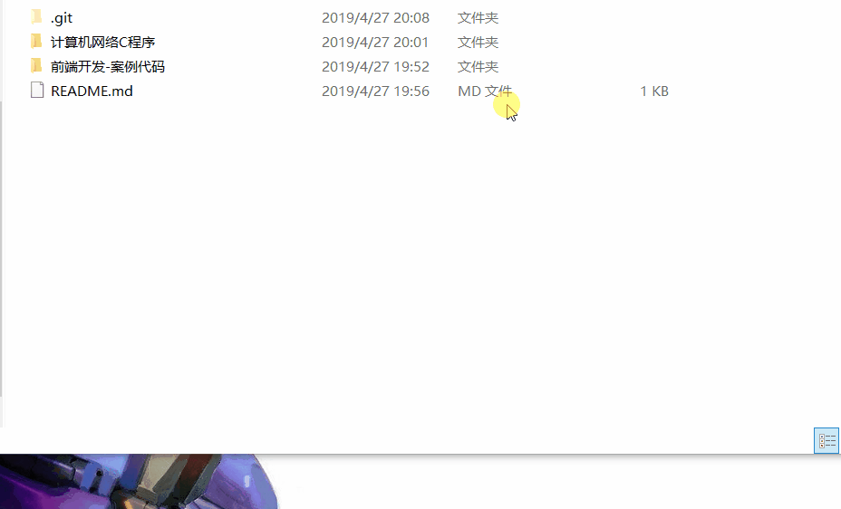

下载安装git

下载好后直接安装就是了，都是傻瓜操作，都点下一步就是了，git软件不大，安C盘不影响什么的
安好后鼠标右键可以出现git Gui选项就好了

生成自己的ssh密钥对
在你本地和需要git的服务器进行数据交互需要身份认证，总不至于每次都输账号名和密码吧。。。
这里我们使用非对称加密密钥对来识别身份。
非对称加密
非对称加密算法需要两个密钥：公开密钥（publickey:简称公钥）和私有密钥（privatekey:简称私钥）。公钥与私钥是一对，如果用公钥对数据进行加密，只有用对应的私钥才能解密。
去自己的用户目录下 ~/ 看看有没有/.ssh文件（是隐藏文件，需要打开查看里面的隐藏文件）
没有就自己生成一个
使用
ssh-keygen -t rsa -C "youemail@163.com"
然后连续回车就好了
安装到你github上
登陆上你的github 打开个人设置里面的 SSH and GPG keys 新建一个，名字随意，key 就填刚才生成的.pub结尾的文件用记事本打开里面的全部内容
概念
配置一个git目录
好了之后在我们要上传的文件夹内打开git bash
1 . 初始初始化这个目录为git目录
git init
2 . 配置个人信息
git config --global user.name "My Name"git config --global user.email myEmail@example.com
3 . 向‘暂存区’提交文件
git add -A -A表示提交这个文件夹下的所有文件，一般都这样用
4 . 将暂存区里的改动给提交到本地的版本库
git commit -m "Initial commit." 在每次add 之后都必须提交给本地版本库，不然上传不了
5 . 自己在github上新建一个项目，最好不要生成README 然后添加远端库
git remote add origin https://github.com/XXXXXXXXXXX/XXXXXXXXX.git

6 . 上传代码
git push -u origin master
总结
以后上传文件后就
1.git add -A
2.git commit “Hello World!!!”
3.git push